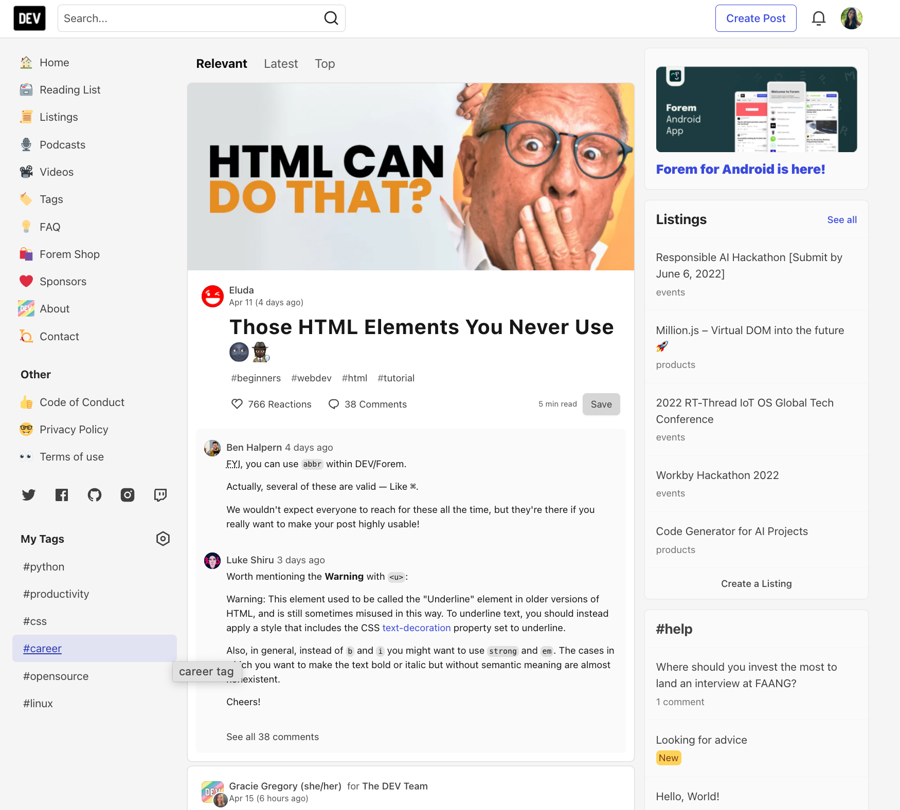
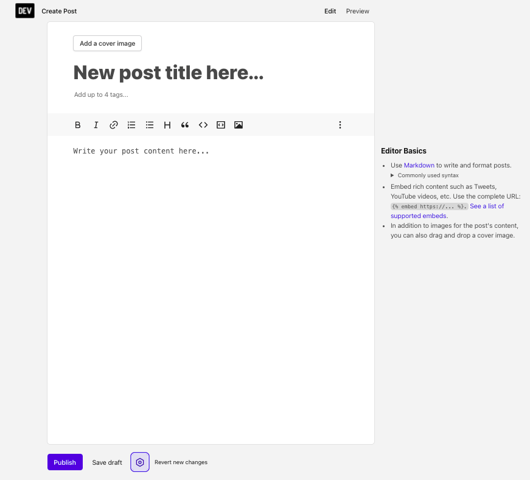

DEV UI Components Reference Guide

Overview
This reference document describes the components of DEV's user interface (UI) for users unfamiliar with the DEV website.
Homepage components
On the DEV homepage, after logging into your account, you will see:
- A sidebar
- A social feed
- Listings
- Trending tags, and
- A Create Post button
Sidebar
The sidebar serves as DEV's navigation system. Reference the table below to learn about each menu item in the sidebar.
| Menu Item | Description |
|---|---|
| 🏡 Home | This menu item navigates you to DEV's homepage. |
| 🗃 Reading List | This menu item navigates you to your bookmarked DEV posts. |
| 🎙 Podcasts | This menu item navigates you to DEV's Podcasts page, where you can discover podcasts related to tech. |
| 🎥 Video | This menu item navigates you to the DEV Community on Video page, where you can peruse and watch videos posted on DEV. |
| 🏷 Tags | This menu item navigates you to the Top tags page that lists and defines popular DEV tags to follow. |
| 💡 FAQ | This menu item navigates you to the Frequently Asked Questions page, where you can find answers to questions you may have. |
| 🛍 Forem Shop | This menu item navigates you to the Forem store to purchase Forum merchandise. |
| ❤️ Sponsors | This menu item navigates you to the Sponsorship Options page, where you can learn about DEV's current sponsors, how you can become a sponsor, and access the Sponsorship Interest Form. |
| About | This menu item navigates you to the About DEV page, where you can learn more about DEV. |
| Contact | This menu item navigates you to the Contacts page, where you can find DEV's contact information. |
Other
The Other is a subsection within the sidebar. Reference the table below to learn about each menu item in the Other section of the sidebar. |Menu Item|Description| |--|--| |👍 Code of Conduct|This menu item navigates you to DEV's Code of Conduct page, where you can learn DEV's rules and proper practices for community members to follow.| |🤓 Privacy Policy|This menu item navigates you to DEV's Privacy Policy page, where you can learn about how DEV collects, safeguards, and manages your information.| |👀 Terms of Use|This menu item navigates you to DEV's Web Site Terms and Conditions of Use page that discloses the rules, conditions, limitations, and other details that DEV and community members must agree to when using the website.|
Social
Social icons are included in the sidebar that links to DEV's social media accounts, which include:
- GitHub
- Instagram, and
- Twitch
My Tags
The My Tags is a subsection in the sidebar that lists tags you currently follow.
Adjacent to the My Tags title, you can click the Customize tag priority button to change the order of your tags.
Social feed
The social feed displays DEV posts. You can filter DEV posts by selecting:
- Relevant
- Latest, and
- Top
Reference the table below to learn what each social feed filter means.
| Filter | Description |
|---|---|
| Relevant | The Relevant filter displays DEV posts with tags you follow. |
| Latest | The Latest filter displays new DEV posts. |
| Top | The Top filter displays popular and trending DEV posts. |
Listings
Listings displays job posts, events, new products, and other listings. You can view more listings by clicking See all where you can find and filter active listings to narrow your search. You can also create a new listing.
Trending tags
DEV displays and lists DEV posts that are using trending tags.
Create post
The Create Post button on the top navigation allows you to create a new DEV post.
DEV's Editor

When you create a new post, you'll access DEV's editor, which allows you to draft a DEV post.
Reference the table below to learn about DEV's editor components:
| Component | Description |
|---|---|
| Add a cover image | This lets you upload a cover picture for your DEV post. |
| Add up to 4 tags... | This lets you add up to four tags relevant to your DEV post. Upon clicking, it will automatically provide a dropdown menu showing suggestions of trending tags, or you can create a new tag. |
| Toolbar | This provides editing tools for creating your content, such as bolding and italicizing text, using ordered or unordered lists, creating headings, calling out quotes, displaying code, using code blocks, and adding images. |
| ⋮ (vertically aligned ellipsis) | This lets you view and use more editing tools, including underlining and strikethrough text, a line divider, and a button to view DEV's editor guide. |
| Write your post content here... | This lets you type and create the content of your post in Markdown. |
| Publish | This lets you publish your DEV post for public viewing. |
| Save draft | This lets you save your DEV post as a draft, allowing you to revisit your unpublished post later. |
| Post options | This lets you change the canonical URL, and if your post is or will be a part of a series, you can create a unique name for the series. |
| Edit | This lets you edit your DEV post after it's published or saved as a draft. |
| Preview | This lets you see how your DEV post will render. |